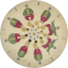

기원전 1만 년알타미라 동굴벽화
이 무렵 다리를 여러 겹 겹쳐 그린 동물에서 움직임을 담으려 한 흔적을 봅니다. 박물관 1층 첫 전시가 여기서 시작합니다.
애니메이션이 걸어온 길필름을 옆으로 끌어 보세요
01 / 07
이 무렵 다리를 여러 겹 겹쳐 그린 동물에서 움직임을 담으려 한 흔적을 봅니다. 박물관 1층 첫 전시가 여기서 시작합니다.
원반을 돌려 틈으로 보면 그림이 움직입니다. 첫 화면의 그 원반입니다.

연속 사진으로 달리는 말의 네 발이 모두 땅에서 떨어지는 순간을 처음 보여 줬습니다.
그림 띠를 스크린에 비춰, 움직이는 그림을 관객 앞에서 처음 상영했습니다.
한 장 한 장 그린 그림으로 만든 초창기 애니메이션 영화입니다.
신동헌 감독이 만든 우리나라 첫 장편 애니메이션. 2층 메모리얼 홀에서 만납니다.
우리나라 유일의 애니메이션박물관. 토이로봇관을 포함해 480만 명 넘게 찾았습니다.
핀스크린은 판에 촘촘히 꽂힌 핀을 밀고 당겨, 그림자의 짙고 옅음으로 그림을 그리는 애니메이션 기법입니다. 박물관 2층 ‘애니메이션이랑 놀자’에서 몸으로 해 보는 핀스크린을 화면으로 옮겼습니다.
애니메이터가 맨 처음 배우는 연습이 ‘공 튀기기’입니다. 공을 잡아 던지면 12분의 1초마다 한 장씩 원화가 남습니다. 꼭대기에선 간격이 좁아지고, 바닥에 닿는 순간 찌그러지죠. 다 던졌으면 재생을 눌러 보세요.
애니메이션의 기원과 탄생, 종류와 제작기법, 한국과 세계 애니메이션의 역사를 차례로 만납니다. 소리를 만드는 폴리 체험과 더빙 체험도 할 수 있습니다.
입장 마감은 17시입니다. 매주 월요일과 1월 1일, 설·추석 당일은 쉽니다(월요일이 공휴일이면 그다음 날 휴관). 관람에 1시간 30분~2시간쯤 걸리니 16시 전에 들어오시면 여유롭습니다.
ITX 청춘이나 경춘선으로 춘천역까지 온 뒤, 서면4·5·6번 버스를 타고 ‘애니메이션박물관 입구’에서 내리면 됩니다.
강원특별자치도 춘천시
서면 박사로 854
지번 서면 현암리 367-3 · 대표전화 033-245-6470 · 토이로봇관 033-245-6460
용산역 → 춘천역 1시간 10분 · 1시간 간격
상봉역 → 춘천역 1시간 20분 · 20분 간격
동서울·고속터미널 → 춘천 1시간 10분 · 약 20분 간격
서면4·5·6 춘천역 → 애니메이션박물관 입구
서면3 중앙시장 환승센터 → 춘천농협(춘천역 걸어서 10분) → 애니메이션박물관 입구